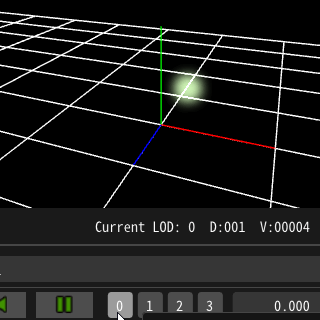

15.トリガーを送信してエフェクトを変化させよう¶
概要¶
本章では、Effekseerのトリガー機能について説明します。 トリガー機能は再生中のエフェクトを途中で変化させることができます。
例えば次の例のように、エネルギーをチャージしている武器をトリガーで発射させるといったエフェクトが実現できます。
ダブルクリックでトリガーを送信します。
トリガー機能¶
トリガーは再生中のエフェクトに対して4つまでのトリガーを送信できる仕組みです。 トリガーを送信されたエフェクトは、ノードに設定されたパラメータに応じて挙動を変化させることができます。
トリガーの設定¶
トリガーによる挙動の変化は、共通で設定します。
共通パネルのトリガー設定
エディタからトリガーを送信する¶
トリガーはコントローラパネルから送信することができます。

トリガーを送信する0,1,2,3ボタン
ゲームからトリガーを送信する¶
SDK、各ゲームエンジン向けプラグインにトリガーを送信するAPIがあります。
サンプルファイル¶
本章ではサンプルファイルTriggerLaser.efkefcを使って解説します。
本章で作成するエフェクトのノード構成
エフェクトをPlayすると、次の動作を行います。
Chargeノードのパーティクルは生成され、子ノードのパーティクルが生成され続ける。Laserノードのパーティクルは生成されない
エフェクトへトリガー0を送信すると、次の動作を行います。
Chargeノードのパーティクルは削除され、子ノードのパーティクル生成が停止するLaserノードのパーティクルは生成を開始し、子ノードのパーティクルも生成される
トリガーを送信すると、パーティクル削除するノード¶
Chargeノードのトリガー設定
トリガーを送信すると、パーティクル生成開始するノード¶
Laserノードのトリガー設定
Tips¶
トリガーによって削除されたパーティクルは瞬時に消えてしまって不自然かもしれません。
その場合は削除後にフェードアウトを設定すると、フェードアウトによって自然に消滅させることができます。
フェードアウト挙動
生存時間内にフェードアウトでは寿命による削除でフェードアウトされますが、トリガーによる削除ではフェードアウトされません。
次の例はどちらもトリガーによってパーティクルは削除されていますが、フェードアウトの挙動が異なります。

生存時間内にフェードアウト |

削除後にフェードアウト |
まとめ¶
本章ではトリガーの使い方を説明しました。トリガーを活用してインタラクティブなエフェクトを作成しましょう。